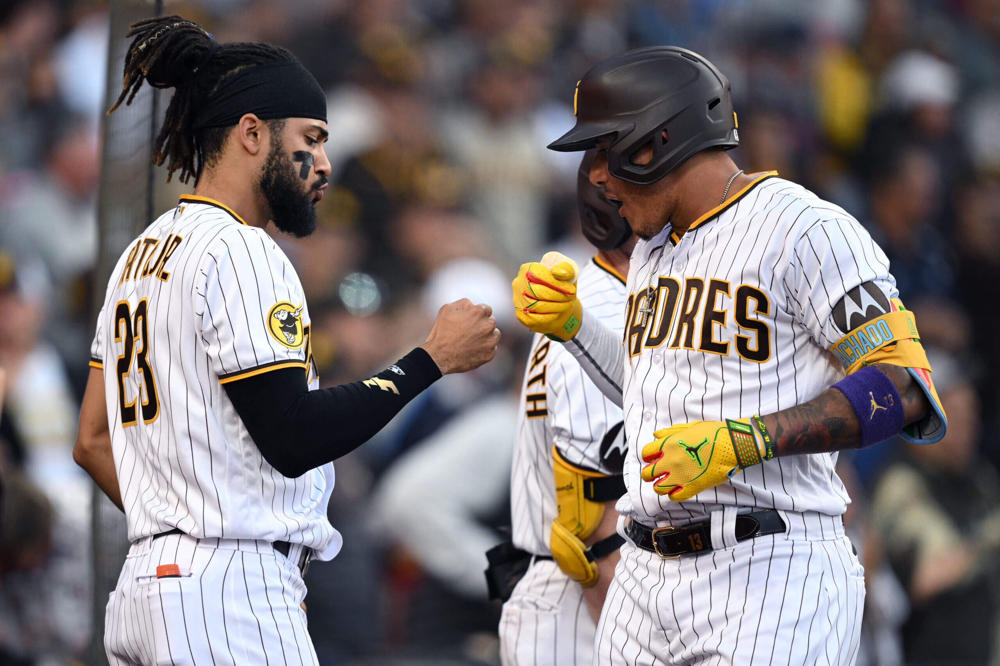
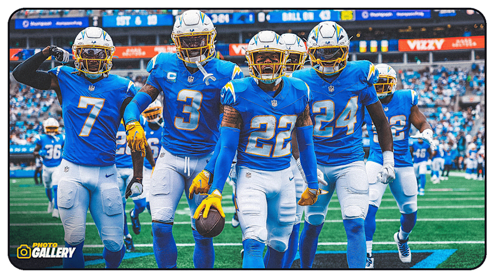
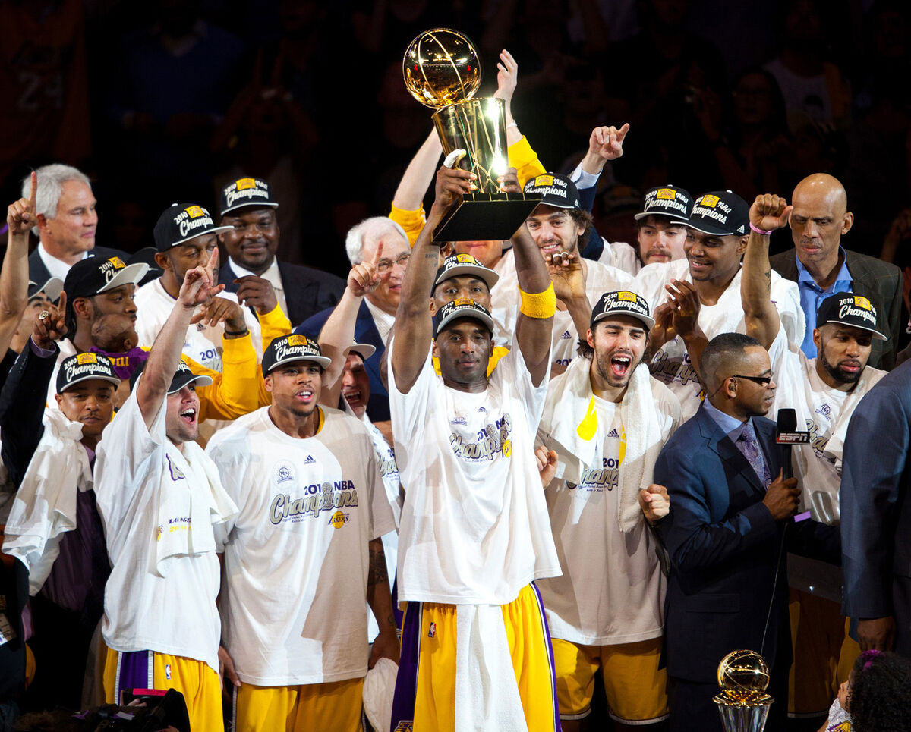

My Hobbies & Interests
Video Games
I know I can always count on video games to be my escape from the stress that everyday life brings. When I do have the free time, I enjoy playing Call of Duty Multiplayer and Call of Duty: Warzone. I even enjoy streaming on Twitch from time to time. Enjoy one of my many gameplays below
My Favorite Teams
I grew up around sports. From playing to watching, they will always hold a special place in my life.
San Diego Padres
Being born and raised in San Diego, I grew up watching Padres games for as long as I can remember. My dad used to always take me and my brother to the ballpark, and it has become one of my favorite pastimes even to this day. One day, I hope to do the same for my future children.
Los Angeles Chargers
My admiration for the Chargers dates back to when I was just 5 years old. During that time, they were still in San Diego. I would say that being a Chargers fan is a love/hate relationship, but I wouldn't trade it for anything in the world. The future looks bright with Justin Herbert at quarterback and Jim Harbaugh at the helm.
Los Angeles Lakers
While my older relatives had Michael Jordan, I had Kobe Bryant to look up to as a basketball player myself. His last championship in 2010 against the Celtics in 7 games is definitely one for the history books. I am proud to be a Lakers fan for life.
